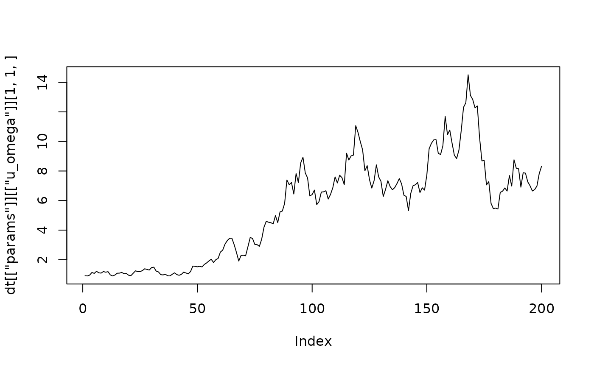

Generates an artificial data set from a vector autoregressive model with constant or time varying parameters and constant or stochastic volatility, for testing the algorithms of the package.
Usage
generate_artificial_var(
nobs = 100,
k = 3,
p = 2,
deterministic = "none",
structural = FALSE,
tvp = FALSE,
sv = FALSE,
range_a = c(-0.5, 0.5),
a_zeros = 0.5,
range_a0 = c(-0.5, 0.5),
range_const = c(-0.5, 0.5),
range_trend = c(-0.01, 0.01),
range_variance = c(1, 1),
range_psi = c(0, 0),
range_variance_state = c(1e-04, 1e-04),
range_variance_sv = c(0.01, 0.01),
stable = TRUE,
presample = 100
)Arguments
- nobs
number of generated observations. Defaults to 100.
- k
number of endogenous variables. Defaults to 3.
- p
number of lags of the VAR model. Can be zero. Defaults to 2.
- deterministic
a character specifying which deterministic terms the model contains:
"none"(default),"const"for an intercept,"trend"for a linear trend, and"both"for an intercept with a linear trend. The terms are the same as increate_bvarmodel.- structural
logical specifying whether a structural VAR model with a lower triangular matrix \(A_0\) of contemporaneous coefficients is generated. Defaults to
FALSE. See 'Details'.- tvp
logical specifying whether the coefficients, \(A_0\) and the elements of \(\Psi\) follow random walks. Defaults to
FALSE. See 'Details'.- sv
logical specifying whether the error variances follow a stochastic volatility process. Defaults to
FALSE. See 'Details'.- range_a
numeric vector with two elements containing the minimum and maximum value of the coefficients of lagged endogenous variables. Defaults to
c(-0.5, 0.5).- a_zeros
numeric between 0 and 1 indicating the share of coefficients of lagged endogenous variables, which should be set to zero. Default is
0.5.- range_a0
numeric vector with two elements containing the minimum and maximum value of the free elements of \(A_0\). Only used if
structural = TRUE. Defaults toc(-0.5, 0.5).- range_const
numeric vector with two elements containing the minimum and maximum value of the intercept terms. Defaults to
c(-0.5, 0.5).- range_trend
numeric vector with two elements containing the minimum and maximum value of the coefficients of the linear trend. Defaults to
c(-0.01, 0.01).- range_variance
numeric vector with two elements containing the minimum and maximum value of the error variances. For
sv = TRUEthese are the variances in the first period. Defaults toc(1, 1).- range_psi
numeric vector with two elements containing the minimum and maximum value of the free elements of \(\Psi\). Defaults to
c(0, 0), which gives uncorrelated errors. Must bec(0, 0)for structural models.- range_variance_state
numeric vector with two elements containing the minimum and maximum value of the variances of the state equations of the coefficients, of \(A_0\) and of \(\Psi\). Only used if
tvp = TRUE. Defaults toc(0.0001, 0.0001).- range_variance_sv
numeric vector with two elements containing the minimum and maximum value of the variances of the state equations of the log-volatilities. Only used if
sv = TRUE. Defaults toc(0.01, 0.01).- stable
logical specifying whether the coefficients of lagged endogenous variables are restricted to a stable VAR process. Defaults to
TRUE. See 'Details'.- presample
numeric specifying the number of observations, which are generated before the first returned observation and then discarded, so that the series do not depend on their initial values. Defaults to 100.
Value
A list with the elements
dataa \(T \times K\) time-series object of the artificial series, named
var1,var2etc.paramsa list of the true parameters with the elements
a_coefthe \(K \times M\) coefficient matrix \((A_1, \dots, A_p, C)\), with the columns in the order of the regressors of
create_bvarmodel, orNULLif the model has no regressors. Fortvp = TRUEa \(K \times M \times T\) array.a0_coeffor
structural = TRUE, the \(K \times K\) matrix \(A_0\), or fortvp = TRUEa \(K \times K \times T\) array.psi_coefthe \(K \times K\) matrix \(\Psi\), or for
tvp = TRUEa \(K \times K \times T\) array.NULLif \(K = 1\) orstructural = TRUE.u_omegathe \(K \times K\) diagonal matrix of error variances \(\Omega\), or for
sv = TRUEa \(K \times K \times T\) array.u_sigmathe \(K \times K\) covariance matrix \(\Sigma\) of \(u_t\), or for
tvp = TRUEorsv = TRUEa \(K \times K \times T\) array.a_state_variancefor
tvp = TRUE, the \(K \times M\) matrix of the variances of the state equations of the coefficients.a0_state_variancefor
tvp = TRUEandstructural = TRUE, the \(K \times K\) matrix of the variances of the state equations of \(A_0\).psi_state_variancefor
tvp = TRUE, \(K > 1\) andstructural = FALSE, the \(K \times K\) matrix of the variances of the state equations of \(\Psi\).u_state_variancefor
sv = TRUE, the \(K\) variances of the state equations of the log-volatilities.
For time varying parameters, as.vector() of an array gives the parameters
period by period, which is the order of the columns of the posterior draws of TVP
models.
Details
The function produces artificial observations for a vector autoregressive (VAR) model: $$A_{0t} y_t = \sum_{i=1}^{p} A_{it} y_{t - i} + C_t d_t + u_t,$$ where \(y_t\) is a K-dimensional vector of endogenous variables, \(A_{0t}\) is a \(K \times K\) matrix of contemporaneous coefficients, \(A_{it}\) is a \(K \times K\) coefficient matrix of endogenous variables, \(d_t\) is a vector of deterministic terms and \(C_t\) its coefficient matrix. \(p\) is the lag order of endogenous variables.
As in Primiceri (2005) \(u_t\) is an error term with \(u_t \sim N(0, \Sigma_t)\) and \(\Psi_t \Sigma_t \Psi_t^{\prime} = \Omega_t\), where \(\Psi_t\) is a lower triangular matrix with ones on the main diagonal and \(\Omega_t\) is a diagonal matrix with error variances \(\omega_{1t}, \dots, \omega_{Kt}\).
Unless structural = TRUE, \(A_{0t}\) is an identity matrix. Otherwise it
is a lower triangular matrix with ones on its main diagonal, whose free elements
are drawn from range_a0, and the errors of the structural equations are
uncorrelated, so that \(\Psi_t\) is an identity matrix and
\(\Sigma_t = \Omega_t\). This is the model that create_bvarmodel
produces with structural = TRUE. The coefficients \(A_{it}\) and \(C_t\)
are those of the structural equations, and the reduced form of the model has the
coefficients \(A_{0t}^{-1} A_{it}\) and the error covariance matrix
\(A_{0t}^{-1} \Omega_t A_{0t}^{-1 \prime}\).
The linear trend takes the value 1 in period \(p + 1\) of the returned series,
which is the first period that create_bvarmodel uses for estimation
with lag order \(p\). The true coefficients of the trend are therefore those
that model estimates with the same lag order refer to.
If tvp = FALSE and sv = FALSE, all parameters are constant over time.
If tvp = TRUE, the coefficients \(a_t = vec(A_{1t}, \dots, A_{pt}, C_t)\),
the free elements of \(A_{0t}\) and the free elements \(\psi_t\) of
\(\Psi_t\) follow random walks
$$a_t = a_{t-1} + v_t, \quad v_t \sim N(0, Q_a), \qquad
\psi_t = \psi_{t-1} + w_t, \quad w_t \sim N(0, Q_\psi),$$
with diagonal \(Q_a\) and \(Q_\psi\), whose elements are drawn from
range_variance_state, and likewise for \(A_{0t}\). Coefficients that are
zero in the first period, such as those set to zero by a_zeros, have a state
variance of zero and stay zero. With the default range_psi = c(0, 0) the
errors therefore remain uncorrelated.
If sv = TRUE, the log-volatilities follow random walks
$$\ln \omega_{it} = \ln \omega_{i,t-1} + \eta_{it}, \quad \eta_{it} \sim N(0, \sigma^2_i),$$
with \(\sigma^2_i\) drawn from range_variance_sv. These are the state
equations of the models that create_bvarmodel produces with
tvp = TRUE and error = "sv" or "sv+covar".
The parameters of the first period are drawn from the ranges above. During the presample they are held at these values, so that the returned paths start at them and the presample only removes the influence of the initial values of the series.
If stable = TRUE, the coefficients of lagged endogenous variables are
drawn until the companion matrix of the reduced form of the process has no
eigenvalue on or outside the unit circle. For tvp = TRUE this holds in
every period: an innovation of the coefficients, which would make the process
unstable, is drawn again, and if no stable innovation is found in 100 attempts,
the coefficients keep the values of the previous period. This restricts the
random walks to the stable region as in Cogley and Sargent (2005). Set
stable = FALSE to generate integrated or explosive series, usually together
with presample = 0. Cointegrated series are generated by
generate_artificial_vec.
References
Cogley, T., & Sargent, T. J. (2005). Drifts and volatilities: Monetary policies and outcomes in the post WWII US. Review of Economic Dynamics, 8(2), 262–302. doi:10.1016/j.red.2004.10.009
Lütkepohl, H. (2006). New introduction to multiple time series analysis (2nd ed.). Berlin: Springer.
Primiceri, G. E. (2005). Time varying structural vector autoregressions and monetary policy. The Review of Economic Studies, 72(3), 821–852. doi:10.1111/j.1467-937X.2005.00353.x
See also
Other artificial data:
generate_artificial_vec()
Examples
# Set seed of RNG
set.seed(1)
# Time series without intercept terms
dt <- generate_artificial_var(nobs = 200, k = 3)
# Time series with all intercept terms equal to 5
dt <- generate_artificial_var(nobs = 200, k = 3, deterministic = "const",
range_const = c(5, 5))
# Time varying parameters and stochastic volatility with correlated errors
dt <- generate_artificial_var(nobs = 200, k = 2, p = 1, deterministic = "const",
tvp = TRUE, sv = TRUE, range_psi = c(-0.5, 0.5))
# Path of the error variance of the first variable
plot(dt[["params"]][["u_omega"]][1, 1, ], type = "l")

# Structural model
dt <- generate_artificial_var(nobs = 200, k = 3, p = 1, structural = TRUE)
dt[["params"]][["a0_coef"]]
#> var1 var2 var3
#> var1 1.0000000 0.0000000 0
#> var2 -0.1471525 1.0000000 0
#> var3 -0.3743031 0.3665609 1